Color comes from combinations of channel values. Resolution controls how many pixel positions are available for detail.
2
Color images use multiple channels
12 / 90
Separate the signal · combine the result
RGB channels contribute different information
Each aligned channel records the intensity of one primary light color. Viewed together, the three maps reconstruct the full-color image.
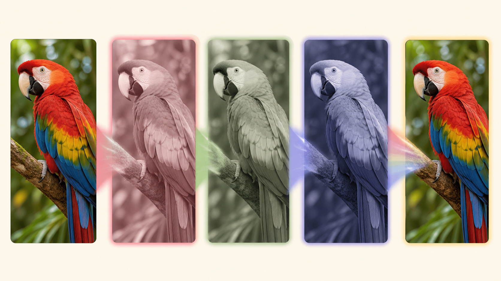
Mixing light
13 / 90
Channel combinations create color
These examples are conceptual—the exact numerical scale can vary.
R
Mostly red
A strong red channel with weak green and blue can look red.
G
Mostly green
A strong green channel can create vivid greens.
B
Mostly blue
A strong blue channel can create deep blues and lilacs.
RGB
Together
Balanced high values can approach white light.
Channels line up pixel by pixel
14 / 90
Three grids combine into one color image
Every location receives a red, green, and blue contribution.
01
Red grid
Red intensity at each location.
→
02
Green grid
Green intensity at each location.
→
03
Blue grid
Blue intensity at each location.
→
04
Color image
Aligned values are viewed together.
Resolution controls available detail
15 / 90
Same scene · different grids
More pixels can preserve finer structure
Low resolution uses fewer positions, so small edges and textures may disappear or become blocky.
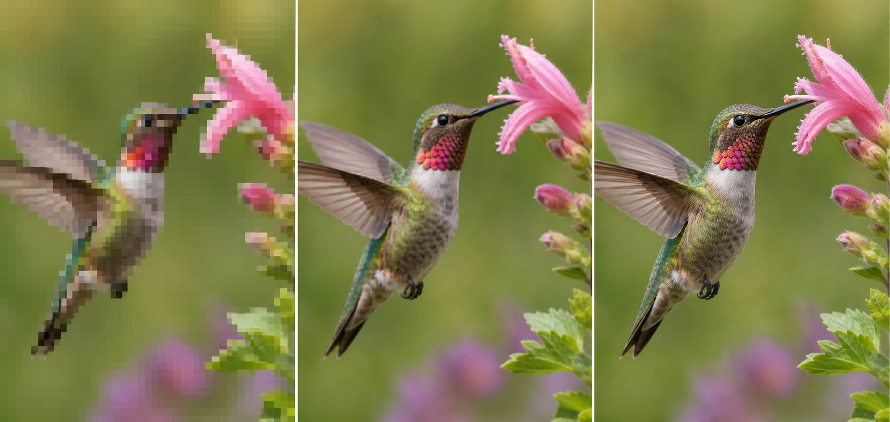
Image dimensions
16 / 90
Width × height tells us how many pixel positions exist
A 1920 × 1080 image contains a grid with 1,920 columns and 1,080 rows.
Smaller grid
Less visual data
Faster to store and process, but fine detail may be lost.
fewer positions
Larger grid
More visual data
Can preserve more detail, but needs more memory and computation.
more positions
Resolution has a trade-off
17 / 90
Detail is not free
Larger images require more work.
More pixels mean more values to store, compare, transform, and generate. This matters when an AI model repeats many operations.
More detail ↔ more computation
Class activity · zoom test
18 / 90
Same rocket · four pixel grids
When does the rocket become recognizable?
Move from large pixel blocks to a crisp image. The subject, framing, and colors stay the same; only the available detail changes.
Look from left to right
01Which clue appears first: color or silhouette?
02When do the window and fins become clear?
03Does the final panel change the meaning—or only the detail?
Recognition often begins before every detail is visible.
Module 3
19 / 90
Moving beyond raw pixel values
Features & latent representations
Models can transform detailed images into representations that emphasize useful patterns and reduce unnecessary complexity.
3
Patterns can build in layers
20 / 90
Pixels → edges → texture → parts → object
Small visual clues combine into larger ideas
The bicycle remains the same subject while each view highlights a different level of useful visual structure.
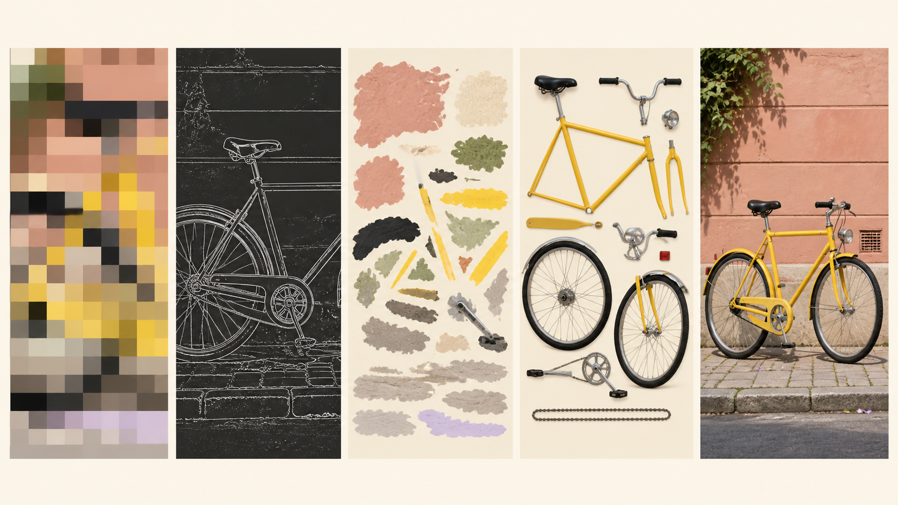
Edges are useful clues
21 / 90
Color view → grayscale → edge map
Strong visual changes reveal boundaries
When neighboring values change sharply, the boundary may outline an object, a fold, a shadow, or a change in material.
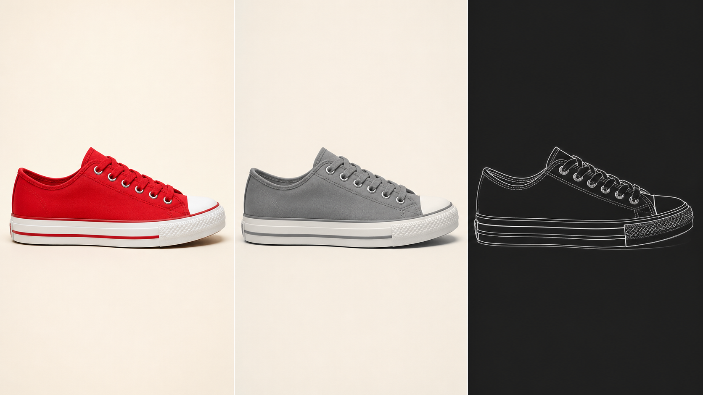
Texture adds another clue
22 / 90
Same shape · different surfaces
Surface patterns help describe materials
Smooth surfaces change gradually. Reflective, fuzzy, and rough surfaces create different local patterns—even when the overall shape stays the same.
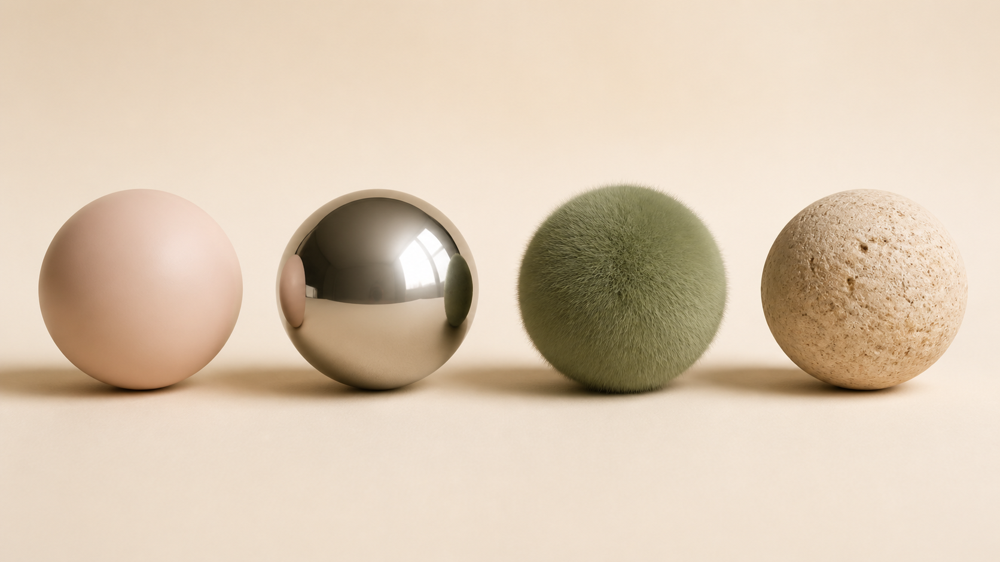
Features work together
23 / 90
No single clue carries the whole meaning
Models combine many weak signals across different locations and scales.
01
Shape
How boundaries form a silhouette.
02
Texture
How local patterns repeat.
03
Color
How channels vary across regions.
04
Context
How parts relate to the surrounding scene.
A representation is a useful encoding
24 / 90
Keep what matters for the task
The model can describe an image without copying every pixel.
A learned representation may preserve patterns that help reconstruction or generation while using a more compact internal form.
Representation = information in a form the model can use
Latent space · high-level overview
25 / 90
A compressed space of possibilities
Related images can have related representations.
Nearby internal representations may share visual concepts, such as similar subjects, compositions, or styles.
Think of neighborhoods—not folders with perfect labels.
A map is a helpful analogy
26 / 90
Conceptual latent neighborhoods
Patterns can cluster by visual similarity
Animals, vehicles, landscapes, and styles can form different neighborhoods. Real latent spaces have many dimensions, not just two.
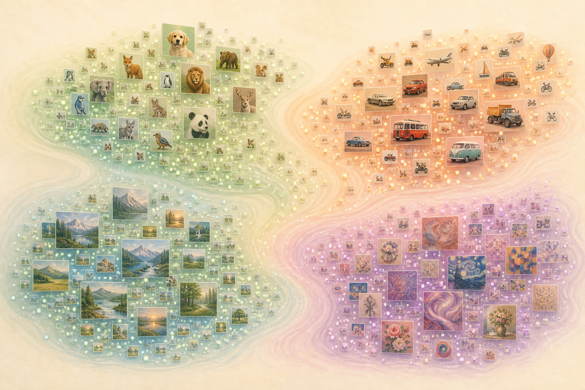
Near and far in representation space
27 / 90
Distance can reflect shared visual information
The geometry is learned from data and training—not designed as a perfect human dictionary.
Closer
More shared patterns
Two fox portraits may share subject, shape, and texture information.
Farther apart
Fewer shared patterns
A fox portrait and a city blueprint may use very different features.
Representations can change smoothly
28 / 90
A conceptual interpolation
Small moves may create gradual visual changes
Intermediate representations can blend traits step by step. This cat-to-fox-to-dog path is an analogy, not a literal two-dimensional route inside every model.
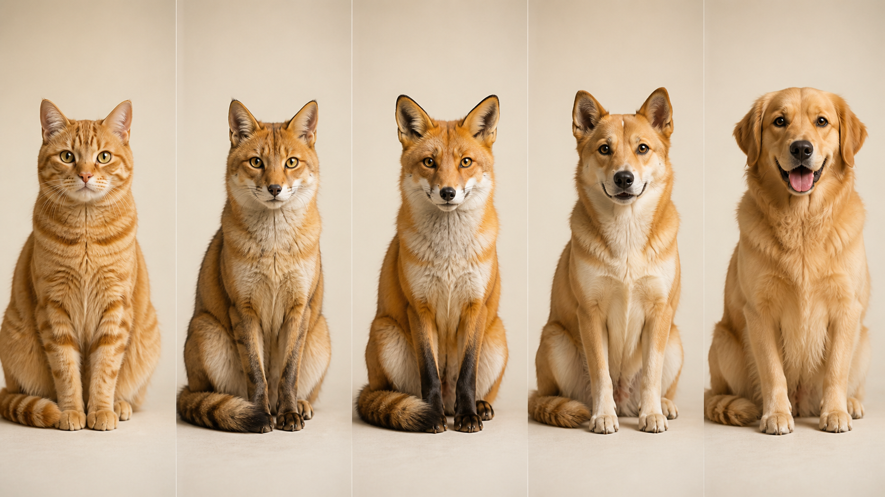
Use the analogy carefully
29 / 90
Latent space is powerful—but not a literal map
The classroom picture simplifies a much more complex mathematical representation.
Helpful idea
Information is compressed and organized
Related visual patterns can influence nearby representations.
Important limit
There are no labeled streets inside the model
Real representations use many dimensions and learned numerical relationships.
Section 1 recap
30 / 90
Three ideas prepare us for diffusion
Now we can ask how an image model learns to move through visual representations.
01
Pixels
Images begin as grids of values.
02
Features
Patterns combine into useful structure.
03
Latents
Compact representations can reduce complexity.
Section 2
31 / 90
The central mechanism
From noise to image
Diffusion models learn a gradual denoising process. Generation begins with uncertainty and builds structure through repeated predictions.
Ⅱ
Module 4
32 / 90
The big idea before the details
The diffusion idea
Instead of drawing a complete image in one jump, the model learns many smaller changes that gradually turn noise into coherent visual structure.
4
A useful first sentence
33 / 90
Generation as gradual refinement
A diffusion model learns to remove noise.
During training, the model practices predicting how a noisy example could become slightly cleaner. During generation, it repeats that skill many times.
Noise → prediction → slightly cleaner image
Training creates the learning problem
34 / 90
Clear examples make denoising practice possible
The model can compare its prediction with a known training example.
Known example
Start with a training image
A real image provides the clean target during learning.
Practice version
Add a controlled amount of noise
The model tries to predict the change needed to reduce it.
The forward path creates harder examples
35 / 90
One lighthouse · increasing timesteps
Noise gradually hides recognizable structure
Color, edges, and silhouette weaken across the sequence until the original scene is nearly impossible to recover by inspection alone.
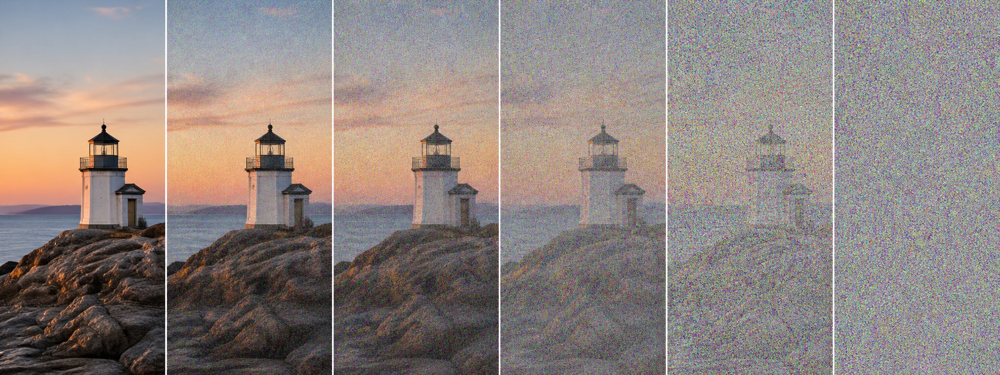
Why not generate in one leap?
36 / 90
Smaller questions can be easier to learn
Many modest corrections can build a complex result.
At each step, the model solves a narrower prediction problem. The sequence turns a difficult image-generation task into repeated refinement.
Complex outcome = many simpler updates
The reverse path is learned
37 / 90
The model does not perfectly reverse every random change
It learns statistical patterns that make cleaner images likely.
Exact reversal
Recover every original pixel
Usually impossible once strong random noise has erased information.
Learned denoising
Predict a plausible cleaner state
The model uses patterns learned across many examples.
Training repeats the lesson
38 / 90
Practice across images, noise levels, and timesteps
Repeated comparison adjusts the model so future denoising predictions improve.
01
Choose
Select a training image and a timestep.
02
Corrupt
Add the matching amount of noise.
03
Predict
Estimate the noise or cleaner direction.
04
Learn
Adjust internal parameters using the error.
A generated result is not a lookup
39 / 90
Patterns are reused; pixels are newly formed
Denoising creates a new trajectory.
The system starts from a random state and follows learned visual tendencies. It is not simply pulling one complete picture from a hidden album.
Learned patterns ≠ stored gallery
Module 5
40 / 90
Constructing the training challenge
The forward process: adding noise
A controlled schedule gradually replaces image signal with randomness, producing examples at many difficulty levels.
5
What is noise?
41 / 90
Noise is random variation added to visual values
In a simplified picture, noise disturbs local brightness and color so the original structure becomes harder to detect.
Signal
Organized visual pattern
Edges, colors, and relationships support a recognizable scene.
Noise
Random visual variation
Unpredictable changes interfere with those relationships.
One forward step
42 / 90
Mix a little randomness into the current image
The amount of added noise depends on the chosen schedule and timestep.
01
Current image
Contains useful signal.
→
02
Random noise
Provides unpredictable variation.
→
03
Noisier image
Keeps less visible structure.
A timestep tracks difficulty
43 / 90
Early, middle, or late in the process
Different timesteps contain different amounts of signal.
An early noisy image may preserve edges. A late one may look almost random. The model must learn across the entire range.
timestep ≈ how noisy is this example?
Signal fades gradually
44 / 90
Forward diffusion
Recognizable structure becomes weaker
The transition is designed so the model encounters many intermediate states—not only clean and fully noisy endpoints.
mostly signalmostly noise
The exact schedule is a technical design choice; the high-level idea is gradual corruption.
Class activity · sequence challenge
45 / 90
Six shuffled images · one process
Put the noisy frames in order
Arrange the balloon frames from clearest to most random. Then explain which visual clues guided your decision.
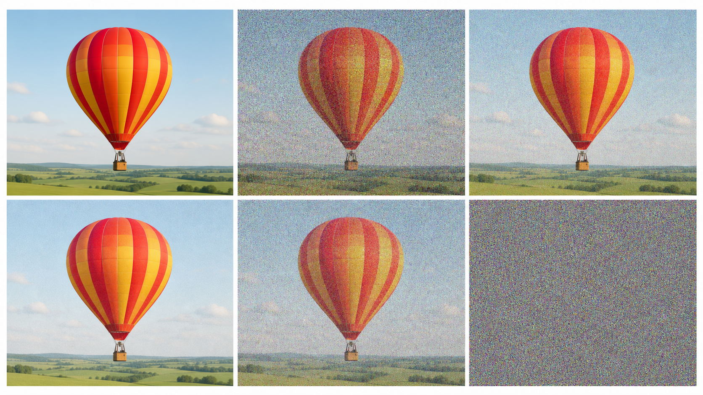
Build the sequence
01When does the silhouette disappear?
02When does color stop helping?
03Which two stages are hardest to place?
Look for signal strength—not just how attractive the image looks.
The forward process has a training role
46 / 90
Create questions with known answers
Adding noise gives the model something measurable to learn.
Because training began with a known image, the system can evaluate how well its prediction points toward a cleaner state.
Known clean image + known corruption = supervised practice signal
Module 6
47 / 90
Generation runs the story in the useful direction
Iterative denoising
Start from random noise, predict a small correction, update the image, and repeat until a coherent result appears.
6
The first frame contains uncertainty
48 / 90
A fresh random seed
Generation begins with noise.
At the start, there is no visible fox, robot, or landscape. The initial random values provide a starting point for the denoising trajectory.
Different starting noise can lead to different outputs.
One denoising prediction
49 / 90
Current state → predicted noise → cleaner direction
One prediction points toward a cleaner state
The middle panel visualizes estimated noise. Real systems apply many updates; this triptych enlarges the idea of one direction, not a literal one-step jump to the final image.
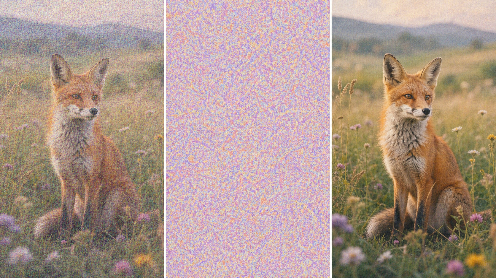
The generation loop
50 / 90
Predict, update, and repeat
The same broad cycle runs across many timesteps.
01
Read state
Inspect current noisy representation.
→
02
Predict
Estimate a denoising direction.
→
03
Update
Move to a slightly cleaner state.
→
04
Repeat
Continue at the next timestep.
The image emerges progressively
51 / 90
Six moments in one denoising path
Coarse structure arrives before fine detail
The model first establishes broad composition and subject shape. Texture and small features become clearer later.
Early denoising decisions
52 / 90
Large-scale structure must settle first
Early updates strongly influence the overall arrangement.
01
Composition
Where major regions and subjects appear.
02
Silhouette
The broad shape of the main subject.
03
Color blocks
Large areas of light, dark, warm, and cool.
Later denoising decisions
53 / 90
Fine details refine the established scene
Later steps usually have less freedom to reorganize the entire composition.
01
Texture
Fur, fabric, grass, paper, or metal.
02
Edges
Sharper boundaries and smaller shapes.
03
Lighting
Local highlights and shadows.
04
Details
Small marks that support realism.
Randomness changes the trajectory
54 / 90
Same prompt · four starting seeds
One instruction can lead to several valid images
Every result follows the greenhouse-robot prompt, yet the camera, robot design, plants, and composition differ because generation began from different noise.
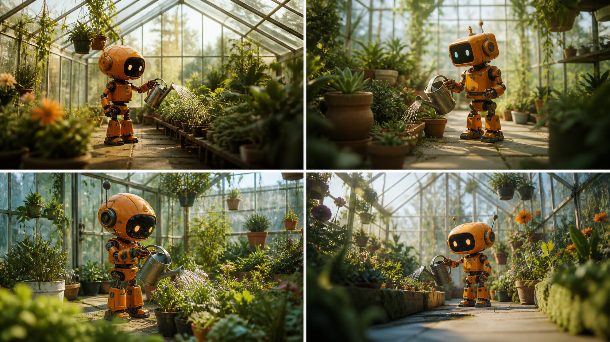
Class activity · next frame
55 / 90
Observe → predict → reveal
What might become clearer next?
Study the current owl image. Decide what is already stable and what may sharpen during the next small denoising update.
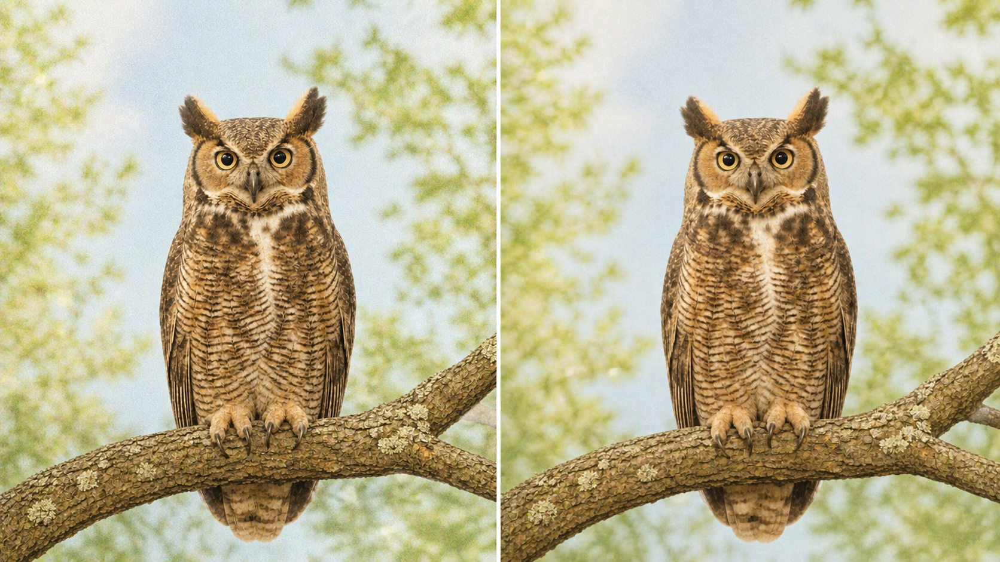
Predict firstClick to reveal the next stage
Current state
Next stage
Already visible
Owl and branch positions
Broad silhouette
Main color regions
Still uncertain
Fine feather groups
Bark texture
Small highlights
Composition → structure → texture → detail
Module 7
56 / 90
Denoising in a more efficient representation
Latent diffusion
Instead of repeating every operation across full-resolution pixels, many systems compress images, denoise in latent space, and decode at the end.
Every extra pixel adds values that must be processed across multiple timesteps. A compact representation can reduce this burden.
More pixels × many steps = more work
An encoder creates a compact form
58 / 90
Compress the image before diffusion
The representation aims to preserve important visual structure while using a smaller working space.
01
Image
Full grid of pixel values.
→
02
Encoder
Transforms visual information.
→
03
Latent
Compact learned representation.
The latent is a working canvas
59 / 90
Denoising can happen without touching every final pixel
The model modifies a compressed representation that still carries useful visual patterns.
Pixel space
Detailed but large
Directly represents final image locations and channels.
Latent space
Compact but meaningful
Represents learned visual information in a reduced form.
The latent diffusion pipeline
60 / 90
Image → compact latent → refined latent → pixels
The model works on a smaller visual canvas
A compact representation is easier to process repeatedly. After denoising, the decoder reconstructs a visible image with color and detail.
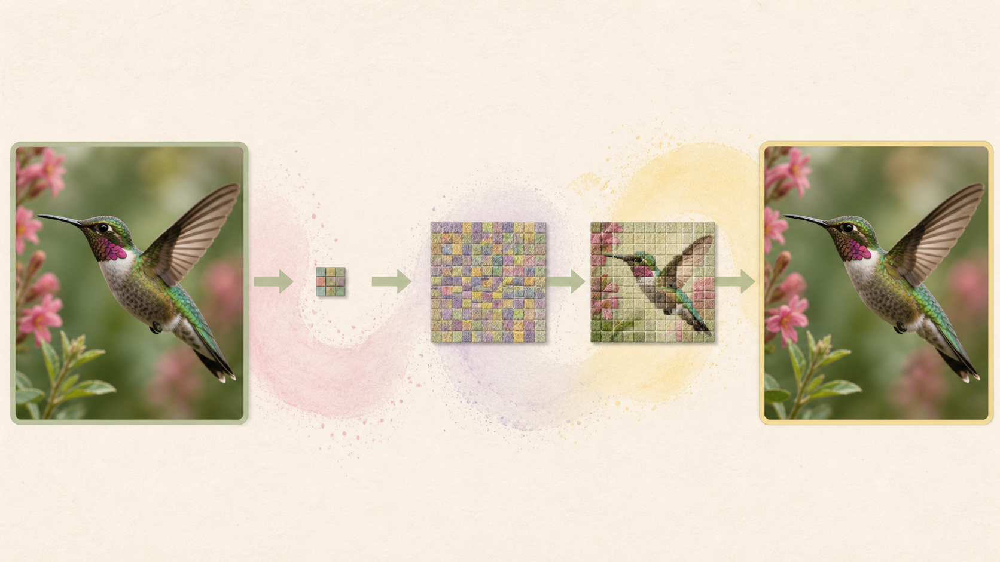
The decoder returns to visible pixels
61 / 90
From compact representation to image
A final latent must be decoded before we can view it.
The decoder reconstructs pixel-level color and detail from the generated representation.
Latent representation → decoder → image
Compression creates a trade-off
62 / 90
Efficiency can come with information loss
A useful latent keeps important structure, but no compression is a perfect copy of every pixel.
Benefit
Faster, smaller working space
The diffusion model can spend computation on a compact representation.
Trade-off
Some exact detail may be harder to preserve
The decoder must reconstruct visible pixels from compressed information.
Section 2 recap
63 / 90
The generation engine now has four stages
Text guidance will join this process in the next section.
01
Noise
Begin with uncertainty.
02
Predict
Estimate a cleaner direction.
03
Repeat
Build structure across timesteps.
04
Decode
Return to visible pixels.
Section 3
64 / 90
Words influence the visual path
How text guides an image
A prompt becomes a numerical representation that conditions denoising. Specificity changes which visual possibilities receive stronger support.
Ⅲ
Module 8
65 / 90
Connecting language and vision
Text embeddings & conditioning
The system represents the prompt numerically, then uses that representation to guide many denoising predictions.
8
A prompt begins as language
66 / 90
Text must become a form the image model can use
The early steps connect directly to ideas from Day 1.
01
Prompt
A natural-language instruction.
→
02
Tokens
Text split into model units.
→
03
Embedding
Numerical representation of relationships.
→
04
Condition
Guidance for image generation.
Text embeddings represent relationships
67 / 90
Meaning becomes numerical pattern
Related descriptions can produce related representations.
Words such as “puppy” and “dog” may share useful relationships, while modifiers such as “watercolor” can shift the desired visual style.
Embedding = learned numerical representation
Embeddings organize language concepts
68 / 90
The model uses relationships—not a dictionary lookup
A prompt representation combines words with their surrounding context.
Individual word
“bank” is ambiguous
It could describe money, a building, or the side of a river.
Contextual phrase
“A boat near the river bank”
Nearby words support the landscape meaning.
Conditioning influences denoising
69 / 90
Words guide the path without becoming pixels directly
The prompt shapes which image becomes more likely
The text representation interacts with the generation process across many steps, encouraging visual features that match the instruction.
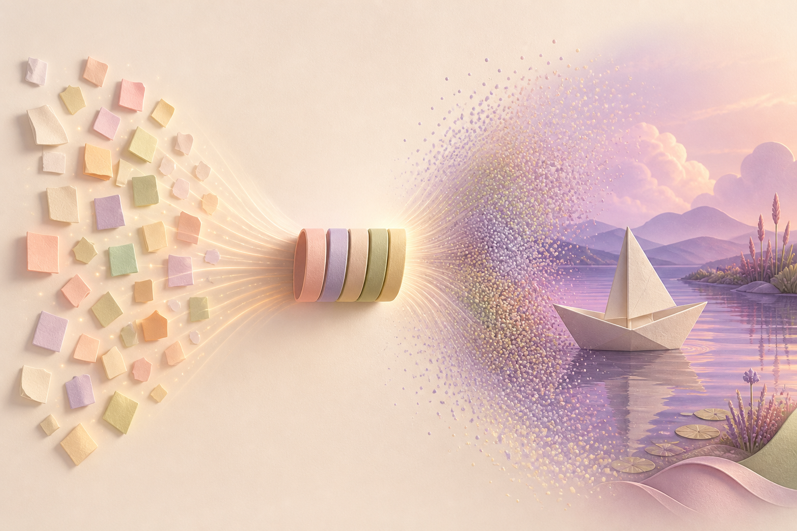
Guidance is repeated
70 / 90
Not one instruction at the beginning
Text can influence many denoising steps.
At each stage, the model compares the current representation with the conditioning information and predicts an update that better fits both.
Current latent + timestep + text condition → update
The full text-to-image path
71 / 90
Prompt to pixels in six high-level stages
Different systems vary, but this mental model captures a common latent-diffusion workflow.
01
Write
Describe the intended image.
→
02
Embed
Represent text numerically.
→
03
Start
Create random latent noise.
→
04
Guide
Denoise using the condition.
→
05
Decode
Produce visible pixels.
Conditioning strength has a trade-off
72 / 90
Weak → balanced → excessive
More prompt pressure is not always better
Weak guidance may lose the subject; balanced guidance can be coherent; excessive pressure may create repetition, harsh color, or unnatural artifacts.
Module 9
73 / 90
Turning intention into useful language
Prompt specificity & style
A good prompt communicates the decisions that matter most: subject, setting, composition, lighting, mood, and visual treatment.
9
Specificity directs attention
74 / 90
Add decisions that matter
Useful detail narrows the space of plausible images.
A broad prompt leaves many choices to the model. A specific prompt communicates which choices should remain flexible and which should be controlled.
Specificity reduces ambiguity; it does not guarantee perfection.
One subject · progressively stronger direction
75 / 90
Compare four prompt levels
Specific instructions shape the visual result
The robot stays recognizable while setting, activity, composition, and lighting become more intentional.
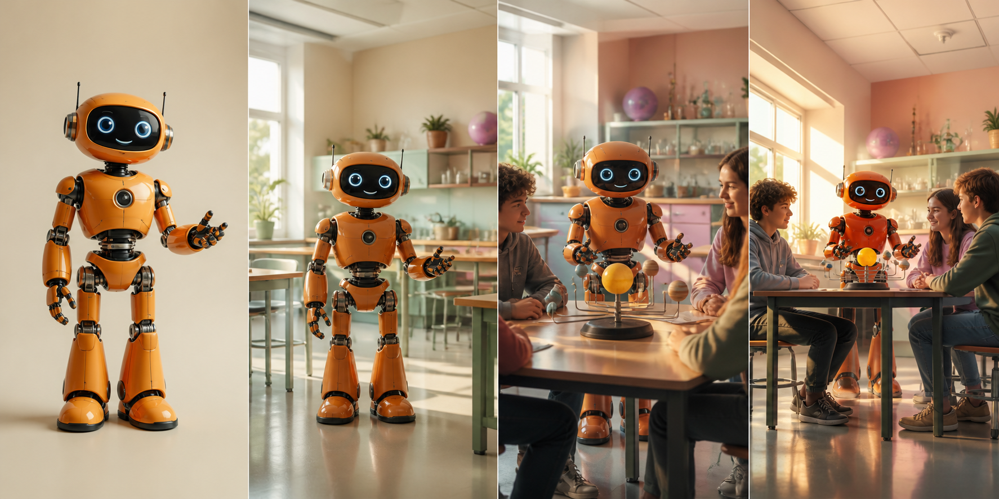
Build a prompt one decision at a time
76 / 90
Subject → setting → framing → lighting
Each useful phrase should create a visible change
The robot stays recognizable while the prompt adds a science lab, a close-up composition, and warm golden lighting.
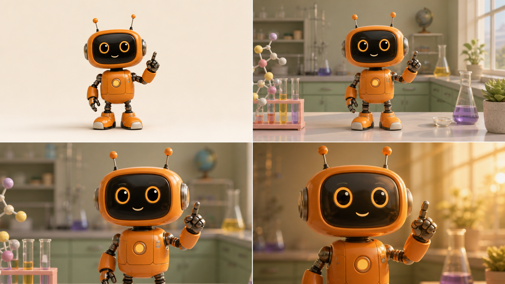
Prompt component · setting
77 / 90
Describe where the scene happens
Setting influences background objects, scale, lighting, and the story implied by the image.
No setting
The model chooses the world
The subject might appear in a studio, street, forest, or empty space.
Clear setting
“In a bright school science lab”
The scene gains useful environmental constraints.
Prompt component · composition
78 / 90
Tell the model how the scene should be framed
Composition describes placement and viewpoint, not just the objects present.
Framing
Wide, close-up, overhead, low angle
Changes how much context and detail the viewer sees.
Placement
Centered, right third, negative space
Helps reserve room and organize visual attention.
Prompt component · light and mood
79 / 90
Same subject · same camera · different light
Lighting changes how a scene feels
Soft daylight, golden hour, studio light, and overcast light alter contrast, color temperature, shadows, and emotional tone without changing the scene.
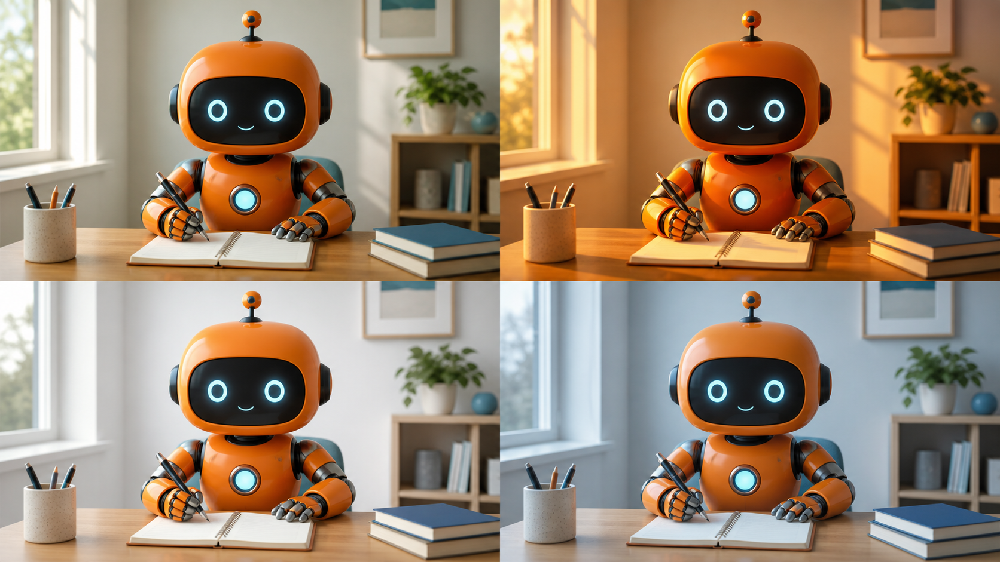
Style modifiers change visual treatment
80 / 90
Same subject · different visual language
Medium and style influence texture, edges, and color.
Words such as “watercolor,” “clay animation,” or “editorial photograph” can guide how the subject is rendered.
Style describes appearance—not the factual truth of the scene.
Style comparison
81 / 90
One fox · four visual treatments
A modifier can reshape the entire image
The subject and composition remain similar, while texture, line quality, depth, and realism change dramatically.
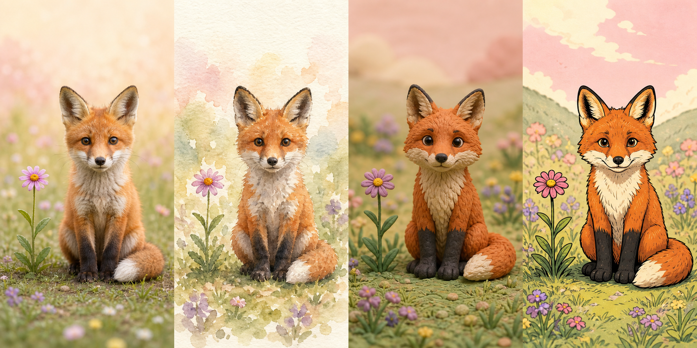
Longer is not automatically better
82 / 90
Specificity should serve the goal
Extra words can conflict, distract, or add noise.
A strong prompt prioritizes the few decisions that matter most. Too many competing instructions can make the target less clear.
Relevant detail > maximum detail
Class activity · prompt studio
83 / 90
Prompting works best as an observation-and-revision process.
Generate → inspect → revise
Improve one prompt as a team
Begin with a broad idea. Add subject, setting, composition, lighting, and style only when each decision supports the goal.
Change one major variable at a time so you can learn what caused the difference.
Module 10
84 / 90
Polished images still need human judgment
Coherence & responsible use
A good-looking image should also make sense: objects, lighting, scale, perspective, purpose, and provenance all deserve inspection.
10
What is visual coherence?
85 / 90
The parts of the scene should agree
Coherence is the feeling that the image follows one consistent visual world.
01
Geometry
Shapes and perspective fit together.
02
Lighting
Highlights and shadows share a plausible source.
03
Identity
Objects and people remain consistent.
04
Relationships
Positions, scale, and contact make sense.
Class activity · coherence detective
86 / 90
Look twice
Can you find five inconsistencies?
Inspect geometry, shadows, reflections, object structure, and impossible overlaps. A polished first impression is not enough.
Common failure patterns
87 / 90
Inspect hands · counts · light · reflections
Polished details can still disagree
Look for an extra finger, a quantity mismatch, a shadow pointing the wrong way, and a reflection showing a different robot.
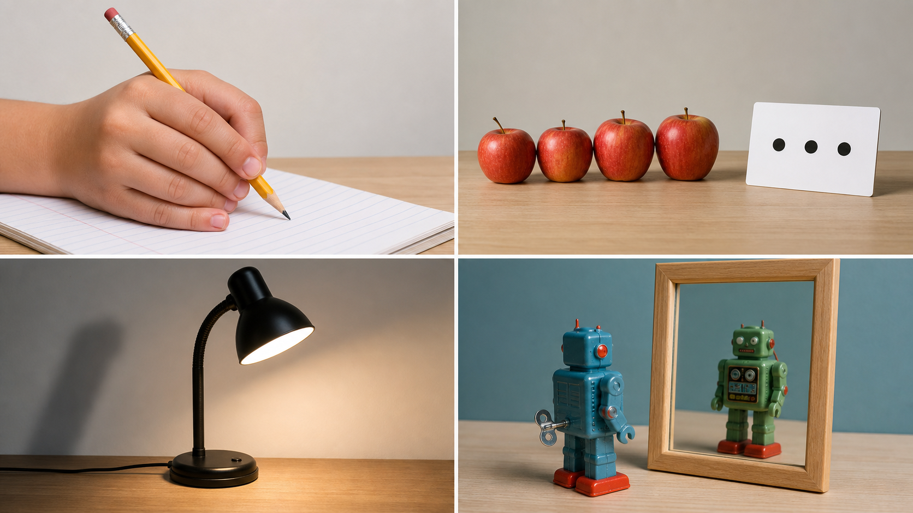
Match trust to purpose
88 / 90
Creative freedom and factual evidence are different goals
The same visual quality can be acceptable for one task and misleading for another.
Creative concept
Exploration can welcome invention
A fictional creature or mood board may benefit from surprise.
Evidence or news
Real-world claims require verification
A generated image should not be presented as proof that an event occurred.
A responsible image workflow
89 / 90
Create, inspect, revise, and label
Human judgment remains part of the process from prompt to publication.
01
Purpose
Define what the image is for.
→
02
Generate
Use an appropriate prompt and tool.
→
03
Inspect
Check coherence, bias, and safety.
→
04
Revise
Change the prompt or reject the result.
→
05
Disclose
Label AI use when context requires it.
Day 2 finale
90 / 90
Keep the whole mental model
Words guide. Noise changes. Images emerge.
A prompt becomes a representation. That condition guides repeated denoising in a visual space. A decoder produces pixels—and a thoughtful human decides whether the result is useful, coherent, and responsible.